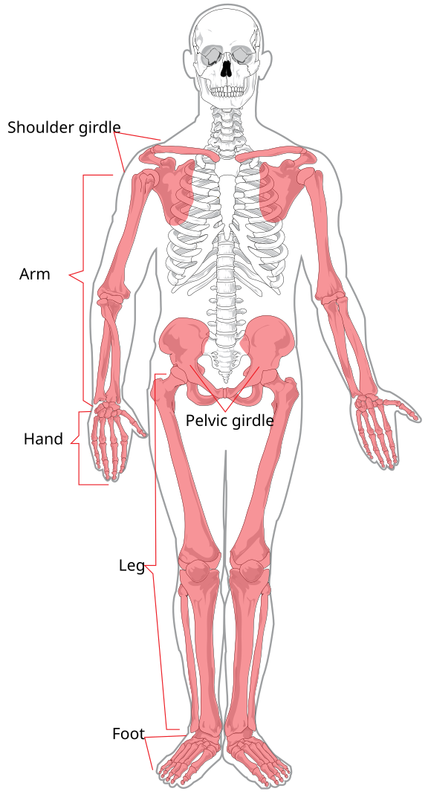
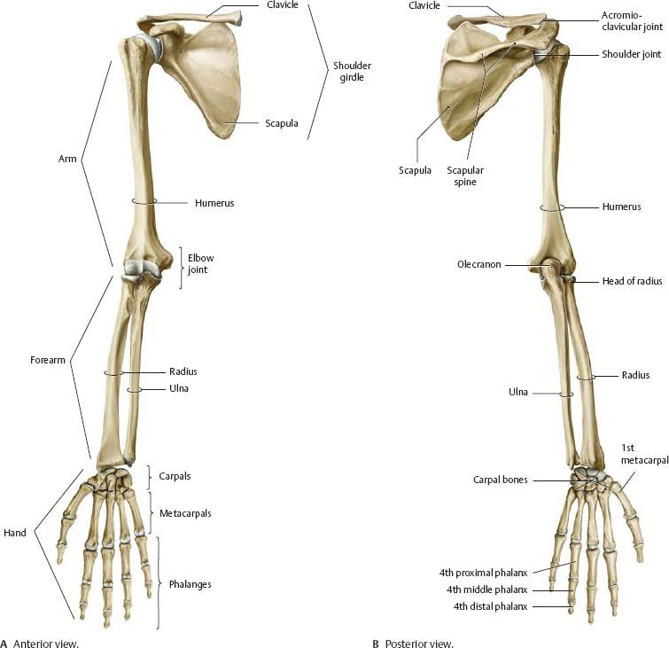
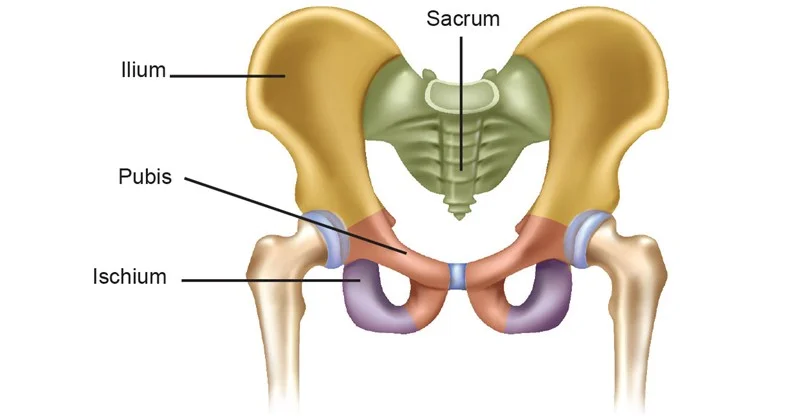
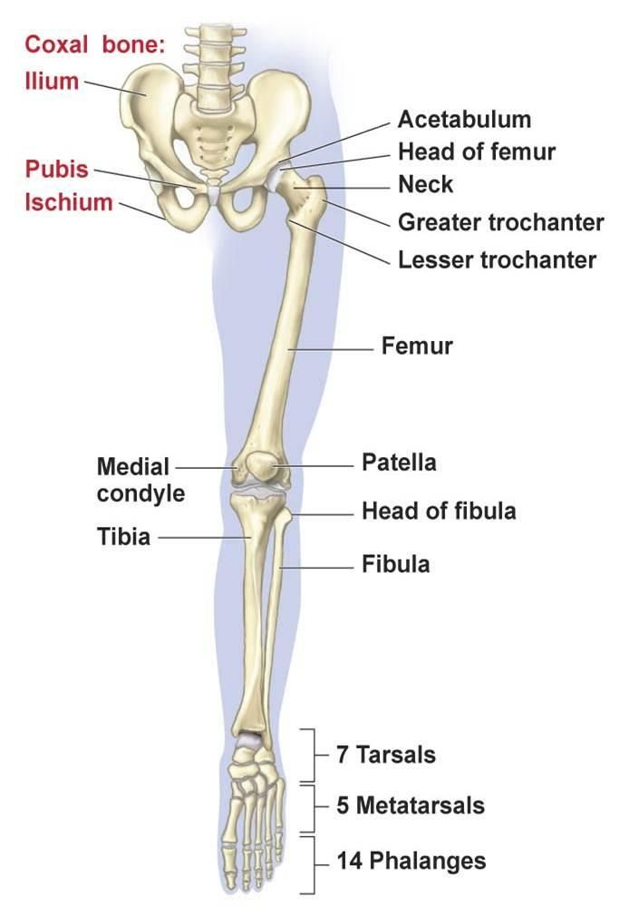

Experiment 3: Identification of Appendicular Bones
AIM
Identification of appendicular bones.Requirements
Human skeleton model, bones of appendicular skeleton.References
Goyal RK, Patel NM. Practical Anatomy, Physiology, and Biochemistry. 11th ed. Ahmedabad: B.S. Shah Publishers; 1991.Introduction
The appendicular skeleton is situated laterally, extending from the body's principal axis. It consists of the pectoral girdle (shoulder), pelvic girdle (hip), bones of upper limbs (arms), and bones of lower limbs (legs).

Pectoral Girdle
- Clavicle (collarbone): Connects shoulder blade to breastbone; maintains shoulder position.
- Scapula (shoulder blade): Flat, triangular bone connecting clavicle and humerus.

Bones of the Arms (Upper Limbs)
- Humerus: Upper arm.
- Radius: Forearm, thumb side.
- Ulna: Forearm, pinky side.
- Carpal Bones (8): Wrist.
- Metacarpals (5): Palm.
- Phalanges (14): Fingers.

Pelvic Girdle
- Ilium: Upper hip bone.
- Ischium: Lower/posterior part.
- Pubis: Anterior part.

Bones of the Legs (Lower Limbs)
- Femur: Thigh bone, longest and strongest.
- Tibia: Shinbone, medial and weight-bearing.
- Fibula: Lateral, thinner bone.
- Patella: Kneecap.
- Tarsals (7): Ankle and heel.
- Metatarsals (5): Middle of the foot.
- Phalanges (14): Toes.
